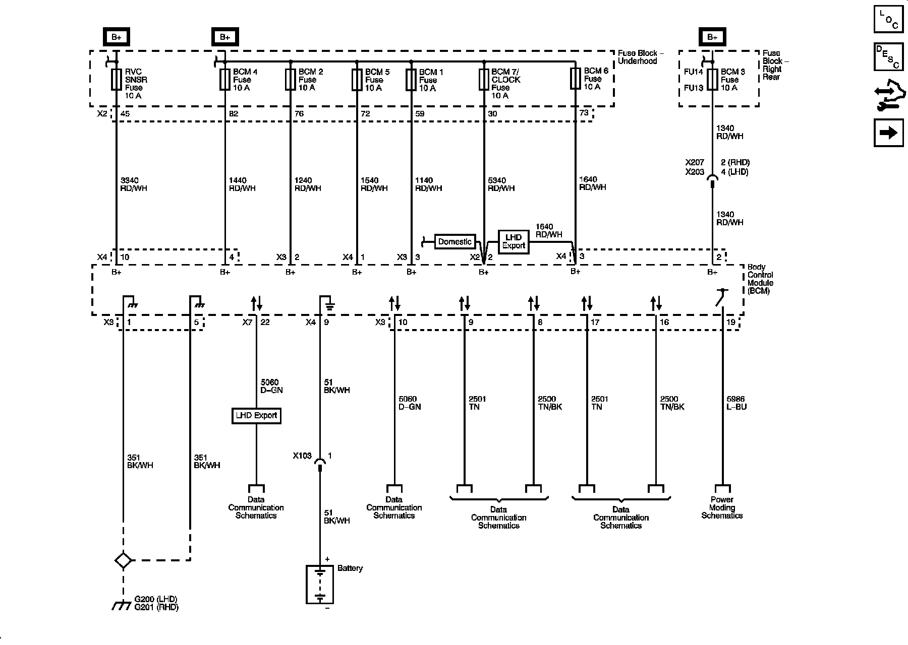
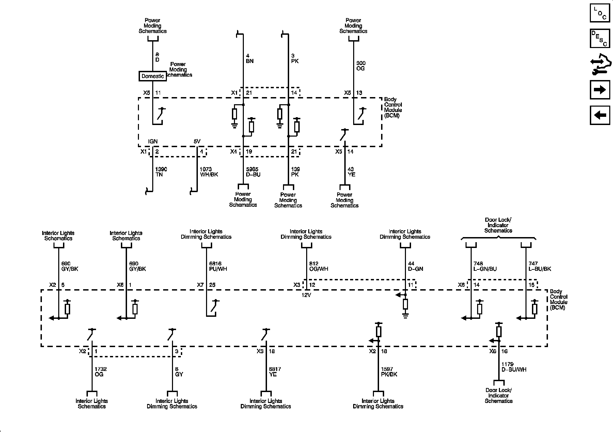
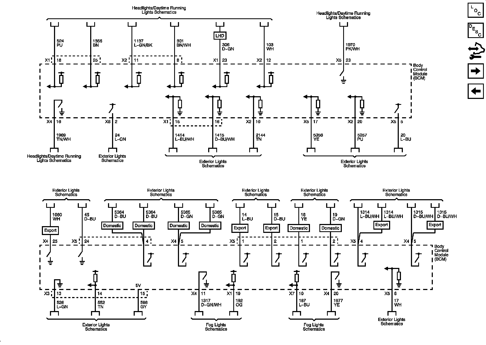
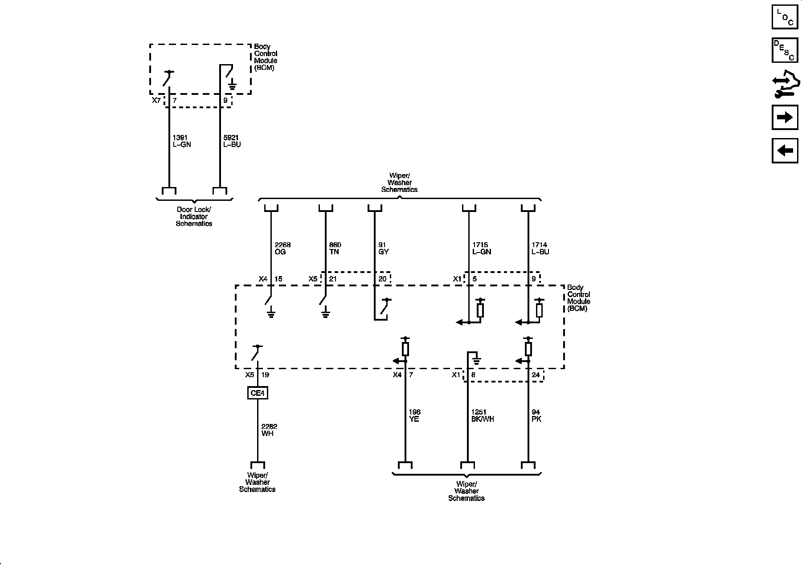
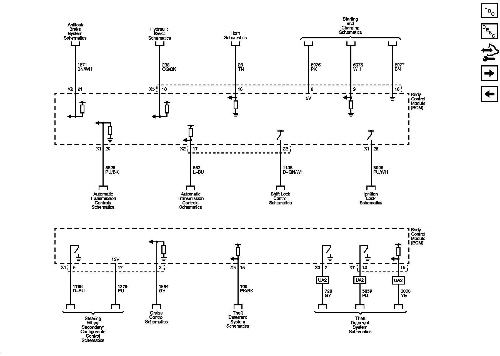
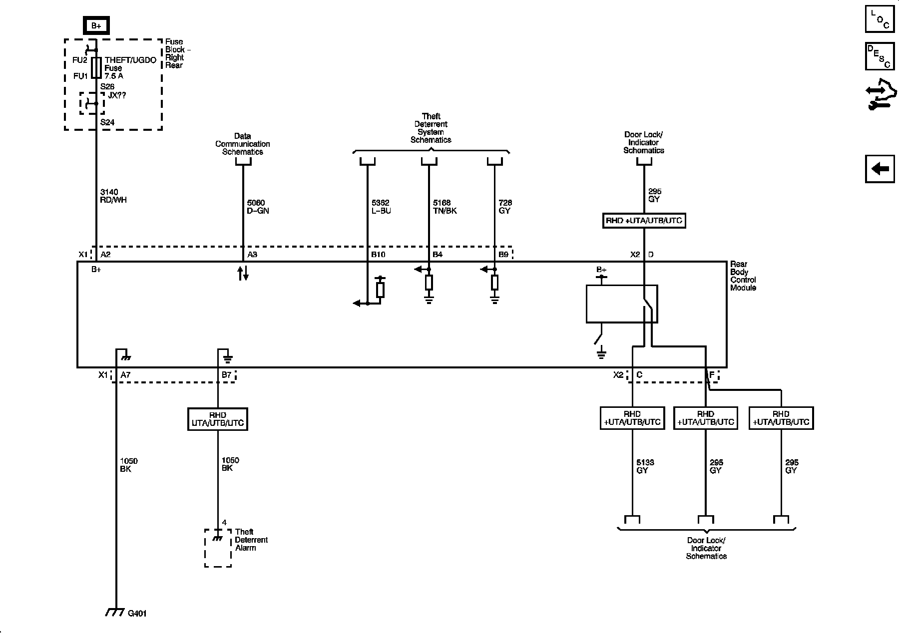

Body Control Systems
Body Control System Schematics
BCM Power, Ground, and Serial Data

BCM Inputs and Outputs 1 of 4

BCM Inputs and Outputs 2 of 4

BCM Inputs and Outputs 3 of 4

BCM Inputs and Outputs 4 of 4

Rear Body Control Module References Export +UTA/UTB/UTC
